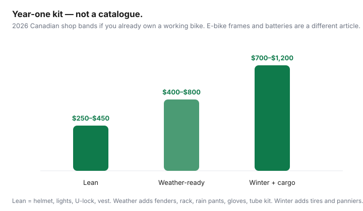

Transportation · Canada
How to budget bike commute safety gear in Canada without overbuying
New Canadian bike commuters either ride dark in October with a $20 cable lock, or they buy a catalogue of kit they wear twice. Theft and winter are the local problems. The goal is a year-one budget that gets you to work visible, attached to a rack, and dry enough to do it again tomorrow — without a $1,200 shopping spree. This is a gear budget, not a bike review.
If the bike itself is still a question, use e-bike vs Compass/PRESTO/Opus. If the alternative is a whole car, use car-lite city numbers. Fares you might still buy in January: Compass and TTC capping.
Disclosure: Bike safety gear, locks, and winter cycling apparel are offer types. Saving Optimizer may earn a commission if we later add partner links. We do not currently claim retailer partnerships. Prices are 2026 Canadian shop bands — confirm live tags. This is not a safety certification or legal advice on provincial lighting rules.
Key takeaways
- Must-use trio: helmet, lights, high-vis. Then a lock that matches downtown theft, not a cottage shed.
- Year-one gear (bike already owned): about $250–$450 lean, $400–$800 weather-ready, $700–$1,200 with winter tires and cargo. E-bikes need a heavier lock and sometimes theft insurance — see the e-bike guide’s $300–$500 add-on band.
- Canadian winter: fenders, rain pants, lights that work at 4:30 p.m. in November, and a decision to ride or to buy two transit months.
- A rack and panniers replace short car trips. A backpack full of milk does not.
- Skip carbon accessories and a second computer. Keep a shop relationship and a $40 spare-tube kit.
Helmet, lights, and high-vis that actually get used
Buy a helmet that fits and that you will wear on a 12 °C morning — not a $40 special that sits on a hook. Canadian bike-shop helmets that meet common CPSC/CSA-style certifications typically run $70–$180 for a commuter shape. Lights: a daytime-running white front and a flashable red rear; many provincial Highway Traffic Act-style rules expect a white front and red rear after dark — confirm your province. USB-rechargeable sets in the $40–$90 band beat coin-cell lights you will not replace. High-vis: a $40–$80 vest or a jacket with a real reflective panel. Fashion black is why drivers “didn’t see you” on a wet King Street at 5:40 p.m.
Locks that match your city’s theft risk
Toronto, Vancouver, and Montréal treat cable locks as gift wrap. Budget:
- Hardened U-lock or quality folding lock: $80–$180. Fill the shackle; lock frame + rear wheel to a fixed rack.
- Secondary cable or small U: $25–$50 for the front wheel if you do not take it inside.
- Where it lives: in-unit beats a condo cage. Cages are theft galleries — our e-bike guide says the same. Register the serial; photograph the bike.
A $1,800 e-bike with a $40 cable is a donation. Tenant or home policies may cap bikes unless scheduled — ask a licensed broker (educational pointer only). Dedicated bike-theft products exist as an offer type; read overnight-outdoor exclusions.
Winter tires, fenders, and clothing layers
Fenders are not optional if you own more than one pair of work trousers — $40–$100 installed. Rain pants $50–$120 beat a $400 “commuter jacket” you overheat in. Gloves you can brake in: $30–$80. Winter or studded tires: $80–$250 a pair depending on size and studs. If you will not ride December–March, do not buy studs; buy a transit product for those months and keep the bike dry. Lights matter more in winter than tires if you only ride dry pavement at dusk.

Cargo options that replace short car trips
A rear rack ($40–$120) plus panniers ($60–$160) replaces the “I drove because of groceries” lie for a couple of bags. A milk crate bungee is fine until it eats a light. Cargo bikes and trailers are year-two purchases after you know the route. Do not buy a front bag that blocks the light you just budgeted.
Maintenance kit and shop relationship
Year-one kit: spare tube, levers, mini-pump or CO₂, a multi-tool — $40–$70. Learn two patches. Then pick a shop you will actually return to for $100–$200/year of winter grit, brakes, and a chain. An e-bike needs a shop that will touch motors; an acoustic bike does not. A relationship is cheaper than a YouTube bottom-bracket weekend if you commute Monday.
Total year-one gear budget ranges
| Kit | What is in it | Year-one band |
|---|---|---|
| Lean | Helmet, lights, U-lock, vest | $250–$450 |
| Weather-ready | Lean + fenders, rack, rain pants, gloves, tube kit | $400–$800 |
| Winter + cargo | Weather-ready + winter tires, panniers, better gloves | $700–$1,200 |
Compare that to two months of Compass 2-zone ($156.70 × 2) or a year of TTC capping — gear is cheaper than a car and in the same conversation as a pass. It is not cheaper than riding the bike you already own with lights from the hardware aisle while you wait for payday. Stage the purchases: lights and lock this week; fenders this month; studs if November-you is still riding.
What to skip as a beginner
- Clipless shoes and a race saddle on week one.
- A radar / computer stack before you have a route.
- Matching kit. One vis jacket is enough.
- A second lock brand “for the cottage” if the bike never leaves the city.
- Cheap Amazon lights with no side visibility and a charge that dies in the cold.
- Skipping the helmet to “save $80” after you spent $2,800 on an e-bike.
Ride 20 days. Then buy only what those days made you swear at. That is the Canadian budget version of a kit list.
Sources & date stamps
- Companion e-bike vs transit guide — $300–$500 must-have add-ons; $100–$200/year service; Compass / TTC / Opus 2026 fares. Reviewed 20 Sep 2026.
- TransLink Compass monthlies from 1 Jul 2026; TTC cap from 1 Sep 2026 — fare companions on this site.
- Canadian shop price bands for helmets, locks, and winter rubber — 2026 retail orientation, not a catalogue. Confirm local shops.
Frequently asked questions
What bike safety gear do I actually need in Canada?
A helmet you will wear, lights that stay on in rain (many provinces require a white front and red rear after dark), and a high-vis layer for winter dusk. Then a lock that matches your city’s theft risk. Everything else is comfort or weather — budget it, do not skip the first four.
How much should a year-one commuter kit cost?
A labelled 2026 band: about $250–$450 for helmet, lights, lock, and high-vis if you already own a working bike; $400–$800 if you add fenders, a rack, rain pants, and gloves; $700–$1,200 if you add winter tires or studs and a real cargo setup. E-bike frames need heavier locks — see the e-bike vs transit guide.
What lock is enough?
A cable lock is a courtesy, not a lock, in Toronto, Vancouver, or Montréal cages. Budget a hardened U-lock or folding lock in the $80–$180 band, plus a secondary cable for wheels, and lock to something immovable. Two cheap locks are not one good lock.
What should beginners skip?
Carbon everything, a $400 jacket you will overheat in, radar computers, and a second pair of clipless shoes. Buy rain pants and lights first. Upgrade after 20 wet commutes tell you what you actually hate.
Do I need winter bike tires?
If you will ride through slush and ice, yes — studded or dedicated winter rubber is cheaper than a broken wrist. If you will put the bike away from December to March and use transit, spend that money on a lock and fenders. Two winter months on a pass is already in our e-bike break-even math.